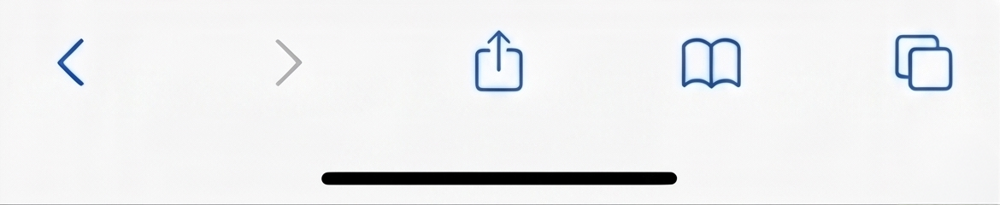

✻✻
✻✻
The concept of ephermeral beauty has long fascinated philosophers. It refers to phenomena that are transient in nature, existing only briefly before fading. Contemplating the liminal space between waking and dreaming reveals how the mind constructs reality from incomplete signals. Such loquacious meditations can render even the most sanguine reader pensive.
찰나의 아름다움이라는 개념은 오랫동안 철학자들을 매료시켜 왔습니다. 이는 본질적으로 일시적이며, 사라지기 전 아주 짧은 시간 동안만 존재하는 현상을 일컫습니다. 깨어 있음과 꿈꾸는 상태 사이의 경계(liminal) 공간을 고찰해 보면, 우리의 마음이 불완전한 신호들로부터 어떻게 현실을 구성해 내는지 알 수 있습니다.
- 찰나의 아름다움 (Ephemeral): 철학자들은 본질적으로 일시적이고 금방 사라져 버리는 아름다움의 현상에 오랫동안 매료되어 왔습니다.
- 현실의 재구성 (Liminal space): 꿈과 현실 사이의 경계 지점을 고찰해 보면, 마음이 어떻게 현실을 구성해 내는지 알 수 있습니다.
- 사색의 영향 (Pensive): 깊고 장황한 명상은 긍정적인 독자마저도 진지한 생각에 빠져들게 합니다.
Depending on the language, it generally took me two to four months of focused learning to become comfortable enough to hold conversations, understand native content, and continue learning independently. Those months, however, were anything but easy. They demanded three to four dedicated hours of practice almost every single day, even after long school hours, and remaining consistent even when progress felt almost invisible.
There were days when I replayed the same conversation repeatedly because I could not understand a single phrase, rewrote sentences until they sounded natural, and revised the same vocabulary before it finally stayed in my memory.

Wellow
Full text
"어떤 언어든 유창하게 말하고 싶나요? 이 5가지 매일의 습관을 시작해 보세요
수개월 동안 공부했는데도 여전히 말하기가 어렵다면, 이 습관들이 당신의 학습 방식을 바꿔놓을 수 있습니다.
저는 영어, 힌디어, 프랑스어, 스페인어, 산스크리트어에 능통하며, 16살 때는 영국식, 미국식, 인도식 영어 억양을 자연스럽게 넘나드는 법도 터득했습니다. 사람들이 이 이야기를 들을 때면 종종 놀라곤 하는데, 제가 가장 많이 받는 질문은 "어떻게 그렇게 어린 나이에 그렇게 많은 언어를 배웠나요?"입니다. 언어에 따라 다르지만, 대화가 가능하고 원어민의 콘텐츠를 이해하며…